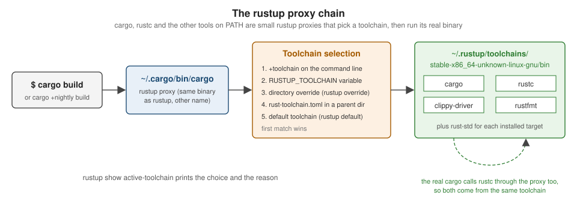

Toolchain, rustup & Editions
|
This content was generated with the assistance of AI and should be verified against the official documentation before being relied on in production. |
This page is written against Rust 1.99.0 and rustup 1.29, checked on 2026-10-06. The current beta is 1.100 (due to become stable on 2026-11-12) and nightly is 1.101. Read Getting Started first if you have not installed Rust yet.
rustup concepts
rustup manages toolchains: complete, versioned installations of the compiler and its tools. The vocabulary of the rustup Book is precise and worth learning:
| Term | Meaning |
|---|---|
Channel |
a release stream: |
Toolchain |
a channel or a specific version, optionally with a date and a host triple:
|
Component |
a piece of a toolchain that can be added or removed: |
Profile |
the set of components installed with a new toolchain: |
Target |
a platform rustc can compile for ( |
Proxy |
the |
Source: The rustup Book: Concepts

The everyday commands:
rustup show # installed toolchains, targets and the active one
rustup update # update every installed channel (and rustup itself)
rustup default stable # the toolchain used when nothing overrides it
rustup toolchain install nightly --profile minimal --component miri,rust-src
rustup toolchain install 1.85.0 # an exact version, e.g. to test an MSRV
rustup component add clippy rustfmt rust-analyzer
rustup component list --installed
rustup target add wasm32-wasip2 aarch64-unknown-linux-gnu
cargo +nightly miri test # one-off: run this command on another toolchain
rustup run 1.85.0 cargo check # same, long form
rustup which rustc # the real binary the proxy would runSource: The rustup Book: Basic usage
Overrides and rust-toolchain.toml
When a command runs, the proxy picks the toolchain by the first rule that applies:
-
a
+toolchainargument (cargo +beta test); -
the
RUSTUP_TOOLCHAINenvironment variable; -
a directory override set with
rustup override set <toolchain>(stored in rustup’s settings, so it is local to your machine); -
a
rust-toolchain.toml(or legacyrust-toolchain) file in the current directory or a parent; -
the default toolchain.
Commit a rust-toolchain.toml at the root of a project when every contributor and CI job must use the same
compiler, components and targets. rustup installs whatever is missing on first use:
# rust-toolchain.toml
[toolchain]
channel = "1.99.0" # or "stable", "nightly-2026-10-01"
components = ["clippy", "rustfmt", "rust-src"]
targets = ["wasm32-wasip2"]
profile = "minimal"Source: The rustup Book: Overrides
Pinning an exact version makes builds reproducible but means updating the file deliberately; pinning stable keeps
everyone on the newest release. For libraries, it is usually better not to pin and instead declare the minimum
supported version with rust-version (see MSRV: rust-version and the MSRV-aware resolver).
Cross-compilation, targets and tiers
A target triple names a platform: <arch>-<vendor>-<os>-<env>, for example x86_64-unknown-linux-gnu,
aarch64-apple-darwin, x86_64-pc-windows-msvc, thumbv7em-none-eabihf (bare-metal Cortex-M) or wasm32-wasip2.
The host is the platform the compiler runs on; the target is the platform the output runs on. Cross-compiling
needs three things:
-
the standard library for the target:
rustup target add <triple>; -
a linker (and, for C dependencies, a C toolchain and sysroot) for the target;
-
the
--targetflag:cargo build --target aarch64-unknown-linux-gnu. Output goes totarget/<triple>/debug/.
# .cargo/config.toml -- tell Cargo which linker to use for one target
[target.aarch64-unknown-linux-gnu]
linker = "aarch64-linux-gnu-gcc"The Rust project supports platforms in three tiers:
| Tier | Guarantee | Examples |
|---|---|---|
1 ("guaranteed to work") |
built and fully tested on every change; host tools available |
|
2 ("guaranteed to build") |
built on every change, tests not always run; many have host tools |
|
3 |
supported in the code base but not built by CI; use nightly with |
many embedded and niche operating-system targets |
x86_64-apple-darwin (Intel macOS) moved from tier 1 to tier 2 in 2025, following Apple’s transition to Apple
silicon. Since Rust 1.90 the x86_64-unknown-linux-gnu target links with LLD by default, which speeds up linking;
see Performance & Profiling for linker tuning.
Tools such as cross (containers with ready-made toolchains) and cargo-zigbuild (Zig as a cross linker) simplify
cross-compiling projects with C dependencies.
Source: The rustc Book: Platform Support
The release train
Rust ships a new stable release every six weeks. Development happens on master, which is published every night as
nightly. Every six weeks the current master is branched as beta, and the previous beta becomes the next
stable — so a change lands in stable between six and twelve weeks after it merges. Point releases (1.99.1) are
rare and only fix serious regressions or security issues.
On nightly, unstable features are enabled crate-wide with #![feature(name)], and unstable compiler flags with
-Z. The feature gate is the contract: stable and beta compilers reject #![feature], so code that depends on an
unstable feature is visibly nightly-only. The nightly-only Unstable Book documents every gate. This section labels
nightly-only features in prose wherever they come up (for example #[may_dangle] on
Drop, RAII & Drop Check).
rustc +stable -Z help
# error: the option `Z` is only accepted on the nightly compilerProjects can test against beta in CI to catch regressions before they reach stable — the release team runs crater, which builds and tests every public crate, before each release for the same reason.
Editions
An edition is an opt-in set of changes that would otherwise break existing code: new keywords, changed defaults,
tighter rules. Rust has had four: 2015, 2018 (modules and paths, async reserved, non-lexical lifetimes), 2021
(disjoint closure captures, IntoIterator for arrays, panic macro consistency) and 2024 (stabilised in Rust 1.85,
February 2025).
Three properties make editions work:
-
Per crate. The
editionkey inCargo.tomlapplies to one crate. A 2024 crate can depend on 2015 crates and vice versa, because all editions compile to the same internal representation; the differences are on the surface (syntax and lints). -
No ecosystem split. Every compiler supports every edition, and new features land in all editions unless they require new syntax (let chains, for example, are 2024-only because they change how
&&parses inif let). -
Automated migration. Most changes come with a lint that rewrites code into a form valid in both editions.
The 2024 edition changes, which are listed with examples in
What’s New & Edition Migration, include:
impl Trait return types capturing all in-scope lifetimes; tighter temporary scopes in if let and block tail
expressions; unsafe extern blocks and unsafe attributes such as #[unsafe(no_mangle)]; the
unsafe_op_in_unsafe_fn lint warning by default; references to static mut rejected; std::env::set_var
becoming unsafe; the gen keyword reserved; Future and IntoFuture in the prelude; Cargo’s MSRV-aware
resolver; and rustfmt style editions.
Migrating a crate is a short procedure:
cargo update # start from current dependencies
cargo fix --edition # still on the old edition: apply migration lints
# edit Cargo.toml: edition = "2024"
cargo build && cargo test # fix whatever the lints could not
cargo fmt # reformat with the new style editioncargo fix --edition sometimes rewrites code into a conservative form (for example, adding use<..> bounds or
wrapping expressions to keep old temporary-drop behaviour). After migrating, review those rewrites and simplify them
where the new behaviour is fine. A 2027 edition is being discussed by the project but has not been announced; treat
any list of its contents as speculative.
A small example of an edition-dependent feature: let chains compile only when the crate’s edition is 2024.
fn first_long_word(text: &str) -> Option<&str> {
// Edition 2024: `if let` and boolean conditions chained with `&&` (stable since 1.88).
if let Some(word) = text.split_whitespace().next()
&& word.len() > 3
{
Some(word)
} else {
None
}
}
fn main() {
assert_eq!(first_long_word("Ferrous metals"), Some("Ferrous"));
assert_eq!(first_long_word("Ox cart"), None);
}MSRV: rust-version and the MSRV-aware resolver
The minimum supported Rust version (MSRV) is the oldest compiler a crate promises to build with. Declare it with
the rust-version key:
[package]
name = "shelf-core"
version = "0.1.0"
edition = "2024" # requires Rust 1.85 or newer
rust-version = "1.85"Cargo uses the field in two ways:
-
An older compiler that builds the crate fails early with a clear "package requires rustc 1.85 or newer" error instead of a confusing syntax error.
-
Since Rust 1.84, Cargo’s MSRV-aware resolver prefers dependency versions whose own
rust-versionis compatible with yours when it picks versions forCargo.lock. It is the default for packages on edition 2024 (resolver = "3") and can be enabled elsewhere withresolver.incompatible-rust-versions = "fallback"in.cargo/config.toml. Dependencies with a higher MSRV are still allowed if nothing else matches, so the resolver is a preference, not a guarantee.
cargo +1.85.0 check # verify the declared MSRV in CI
cargo update --verbose # shows which versions were held back for MSRV reasonsA common policy is "latest stable minus N releases" for libraries and "latest stable" for applications. The axum crate, for example, declares an MSRV of 1.80, while sqlx 0.9 requires 1.94. Raising MSRV is not a breaking change under Cargo’s SemVer conventions, but it should be called out in release notes.
Where the books are outdated
Mara & Holmes (Refactoring to Rust) write their examples for the 2018 and 2021 editions, and Yoon (Beginning
Axum) and the Crossley et al. book use 2021. None of them covers rust-toolchain.toml in depth, the MSRV-aware
resolver (1.84), the 2024 edition (1.85), or LLD becoming the default linker on x86-64 Linux (1.90). When you copy
older code into a 2024 crate, run cargo fix --edition on it first, or expect the errors described in
What’s New & Edition Migration.